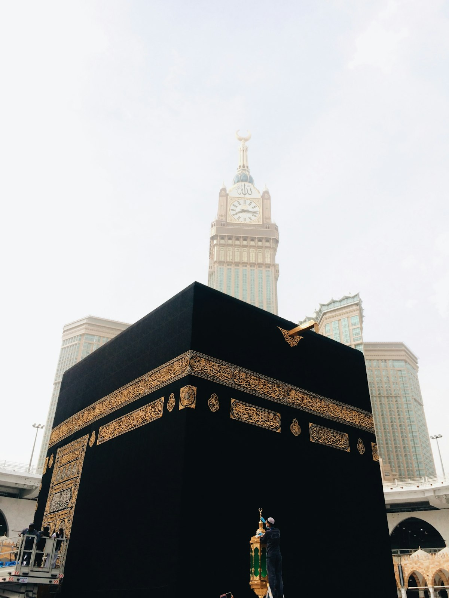
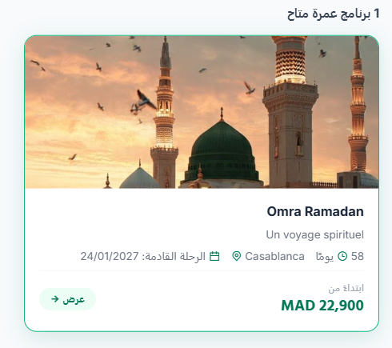
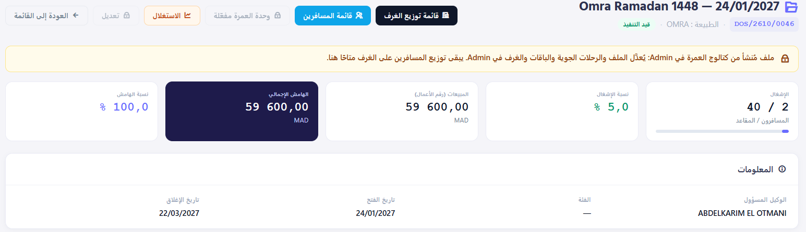
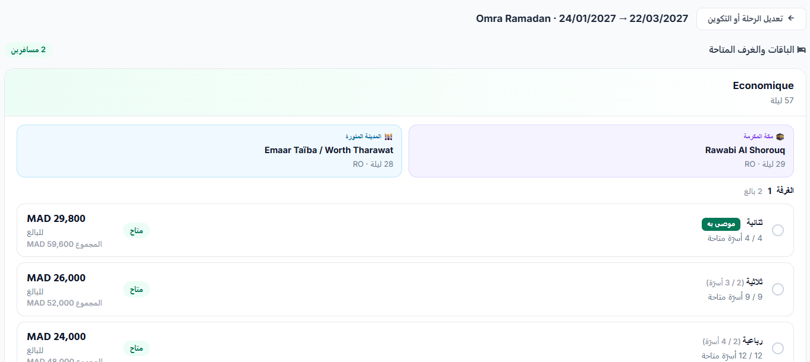
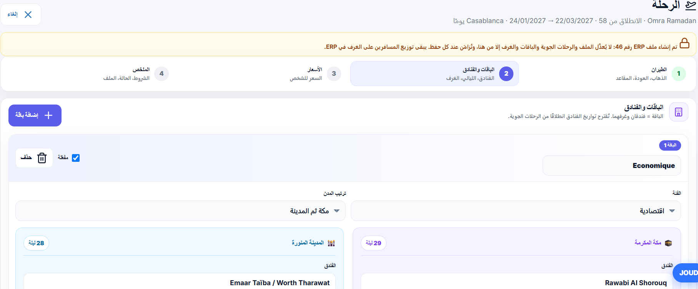
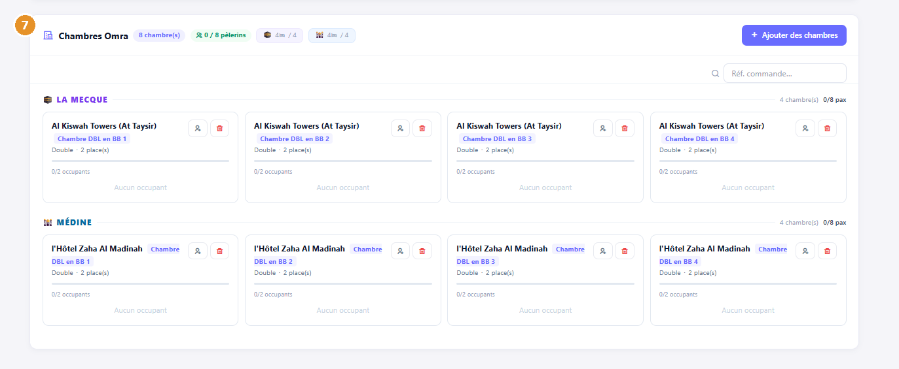
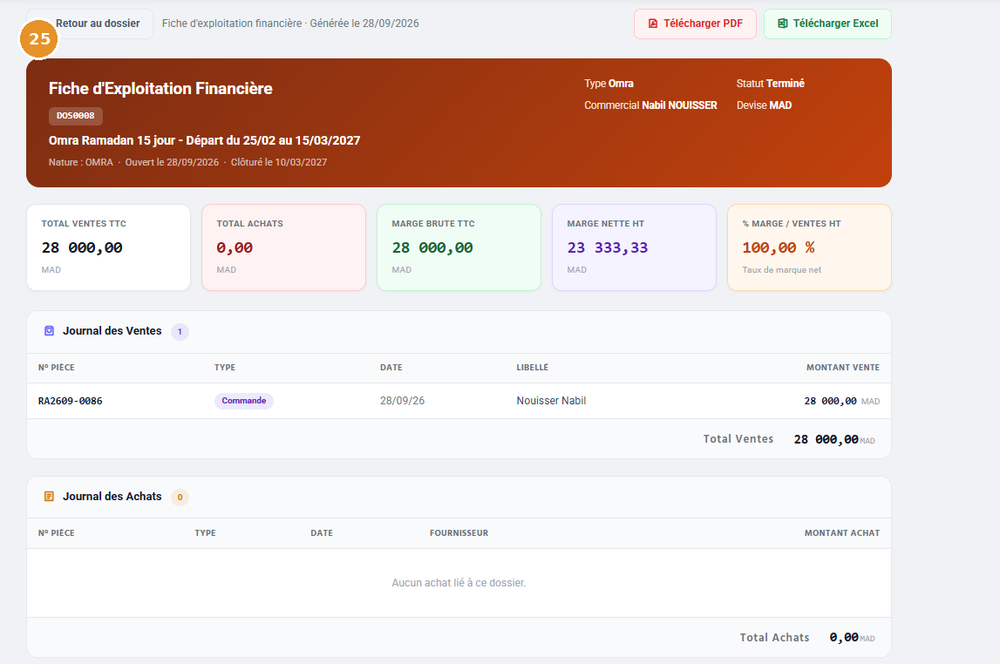
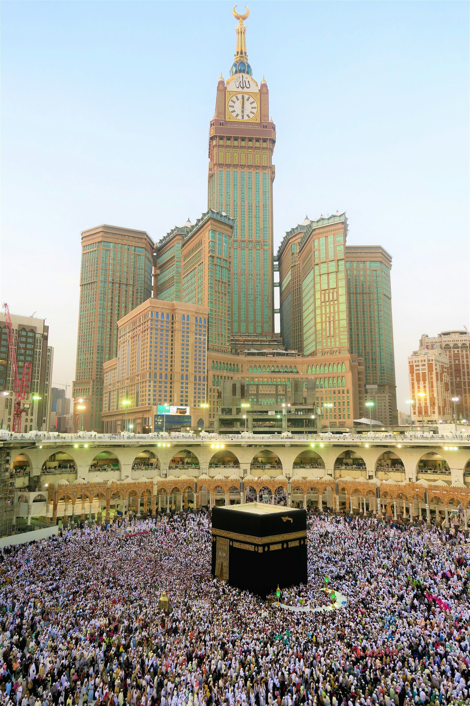

Gestión de grupos Hajj y Omra: el software todo en uno
Travelife Omra: su actividad de Omra, de la oferta a la salida.
Prepare sus programas, venda sus planes y haga el seguimiento de cada salida en un único expediente. La solución es híbrida: para cada programa, usted elige el modo de gestión que mejor le convenga. Todo el equipo trabaja con la misma información.


Lo esencial Software de gestión de Hajj & Umrah
- ProductoTravelife Omra es un software para agencias de viajes. Sirve para preparar, vender y hacer el seguimiento de las salidas de Omra, con un expediente estructurado por salida.
- Modelo híbridoTravelife Omra ofrece tres modos de gestión, a elegir para cada programa: gestión 100 % offline (sin motor de reservas), catálogo de venta y cotización avanzada.
- PlanesTravelife Omra asocia a cada plan los hoteles de La Meca y Medina, las noches, los tipos de habitación (doble, triple, cuádruple) y las capacidades.
- CotizaciónTravelife Omra calcula los costes, las tarifas y el margen previsto a partir de sus contratos de compra (vuelos, hoteles, servicios) y de sus reglas de cálculo.
- OperacionesTravelife Omra distribuye las habitaciones por ciudad y por hotel y prepara los rooming lists y las listas de pasajeros de cada salida.
- Suite TravelifeTravelife Omra se apoya en Admin para las ofertas, en Manage para los pedidos y las operaciones, y en SmartCRM para la relación con el cliente.
Tres modos para su forma de trabajar.
Elija el modo adecuado para cada programa y para su organización. Sea cual sea el modo, el seguimiento comercial y operativo es el mismo: ventas, participantes y operaciones permanecen unidos en Travelife.
Gestión 100 % offline
Prepare directamente el expediente e introduzca sus ventas, sin pasar por un motor de reservas.
Catálogo de venta
Organice sus programas, salidas, planes y tarifas, y véndalos desde un motor de reservas conectado a su catálogo.
Cotización avanzada
El software calcula sus costes y sus precios de venta a partir de sus contratos de compra y de las reglas de cotización que usted ha definido.
Un enfoque que se adapta tanto a las agencias que revenden programas como a las que construyen los suyos.

Su equipo organiza cada salida en un expediente.
La flexibilidad de la venta directa, con una gestión estructurada.
Prepare sus planes y sus habitaciones, registre las propuestas y haga el seguimiento de las ventas a sus clientes. Cada salida conserva en un mismo lugar a sus participantes y sus elementos de operaciones (alojamiento, listas, logística).
- Menos archivos dispersos
- Información accesible para los equipos comerciales y operativos

Sus programas se convierten en ofertas fáciles de vender.
Una presentación clara de las salidas, los paquetes y las habitaciones.
Su catálogo reúne las ofertas preparadas por la agencia. El motor de reservas muestra las salidas y las habitaciones disponibles, con las tarifas y la disponibilidad que usted ha definido.
- Una base común para los asesores
- Propuestas más coherentes y menos doble captura de datos
- Una venta más rápida, sin idas y vueltas
Sus contratos de compra alimentan sus cálculos.
Un coste construido a partir de sus servicios.
Introduzca en un único lugar sus precios de compra: vuelo, hoteles y demás servicios del programa. A continuación, sus reglas de cotización calculan automáticamente los precios según el plan, el número de personas por habitación y los parámetros de la salida.
Si cambia un precio de compra, la cotización se actualiza según sus reglas. Siempre es la agencia quien fija las hipótesis y los precios.
Compras estructuradas
Los cálculos parten de sus contratos y de los servicios que usted ha introducido.
Tarifas calculadas
Costes y precios coherentes con las hipótesis adoptadas para cada plan.
Margen previsto
Usted sabe cuánto debe rendir cada plan antes de ponerlo a la venta.

Paquetes coherentes entre La Meca y Medina.
Asocie a cada plan sus hoteles, el número de noches, los tipos de habitación y las capacidades. Todo permanece conectado: los equipos comparten la misma referencia para vender la oferta y preparar el viaje.
Hoteles y noches
Hoteles de La Meca y Medina asociados a cada paquete, con sus noches.
Habitaciones y capacidades
Habitaciones dobles, triples, cuádruples y capacidades de alojamiento por paquete.
Admin & Manage
Usted configura el catálogo en Admin; Manage, el ERP de Travelife, centraliza la gestión comercial y operativa.
Paquete · Programa de Umrah
AdminLa Meca
Hotel asociadoNoches definidas por paqueteMedina
Hotel asociadoNoches definidas por paqueteTipos de habitación Capacidades por paquete
Cada viajero encuentra su lugar en su organización.
Un expediente por salida para coordinar a los equipos.
Encuentre a los participantes, su información de viaje y su alojamiento. Usted distribuye las habitaciones por ciudad y por hotel, y el software prepara los rooming lists (listas de distribución de habitaciones) y las listas de pasajeros.

La venta y la operación siguen vinculadas.
Del cliente facturado a la visión financiera de la salida.
Haga el seguimiento de los pedidos, los pagos y la facturación desde las ventas. En el expediente, los diarios de ventas y de compras y la ficha de operaciones le permiten comparar lo que ha generado la salida y lo que ha costado.
- Finanzas y pedidos en tiempo real
- Margen previsto y resultado real comparados
Captura ilustrativa del producto. El margen previsto procede de la cotización; el resultado, en cambio, se calcula a partir de las compras y las ventas realmente registradas.

Su actividad de Umrah se integra en la gestión de su agencia.
La relación con el cliente, la venta y las operaciones se siguen sin interrupciones. Travelife Omra se apoya en la suite Travelife: preparación de ofertas en Admin, pedidos y gestión operativa en Manage, seguimiento de la relación con el cliente en SmartCRM, según su configuración.
Para el equipo comercial
Ofertas claras y un seguimiento de ventas centralizado.
Para el equipo operativo
Participantes y habitaciones organizados por salida.
Para la dirección
Indicadores para seguir la ocupación, las ventas y los costes.
Su experiencia en Umrah se convierte en una organización que todo el equipo puede compartir.

Su próxima salida de Umrah merece una gestión clara. Elija su organización.
Un enfoque a medida para dirigir sus programas. Empiece con una gestión offline, organice un catálogo de venta o prepare sus ofertas con cotización avanzada. Travelife Omra se adapta a su forma de construir y vender sus programas.
Offline
Gestión directa y flexible en el expediente.
Catálogo
Ofertas estructuradas para el motor de reservas.
Cotización
Cálculos automatizados basados en las compras configuradas.
Preguntas frecuentes sobre el software Travelife Umrah
Modelo híbrido, gestión offline, cotización avanzada, integración en su agencia: las respuestas sobre Travelife Omra.
¿Prepara su próxima temporada?
Le mostramos Travelife Umrah con sus propios programas.
¿Todavía tiene preguntas? Síganos en Instagram.
¿Qué es un software de gestión de Umrah para agencias de viajes?
Un software de gestión de Umrah centraliza todo el ciclo de un programa de peregrinación: preparación de los paquetes, venta a los clientes, seguimiento de los participantes y organización de la salida. Travelife Umrah reúne estas etapas en un expediente estructurado por salida: hoteles de La Meca y Medina, noches, tipos de habitación, ventas, pagos, rooming lists y listas de pasajeros. Los equipos comerciales, operativos y la dirección trabajan con la misma información, en lugar de multiplicar archivos de Excel dispersos. El software se integra en la suite Travelife (Admin, Manage, SmartCRM).
¿Qué es el modelo híbrido de Travelife Umrah?
El modelo híbrido combina la flexibilidad de la venta directa y a medida con el rigor de una gestión estructurada por expediente. Sus equipos crean planes flexibles y mantienen un seguimiento centralizado, sencillo e idéntico para todas las salidas.
¿Cómo funciona la gestión offline de los expedientes?
Su equipo organiza cada salida dentro de un único expediente. En él registra las propuestas, hace el seguimiento de las ventas a clientes, asocia a los participantes y centraliza los elementos de operaciones. El resultado: menos archivos dispersos e información inmediatamente accesible para los equipos comerciales y operativos.
¿Se necesita un motor de reservas en línea para usar Travelife Umrah?
No. El modo «Gestión 100 % offline» permite preparar directamente el expediente e introducir sus ventas sin pasar por un motor de reservas. Es el punto de partida más sencillo para una agencia que vende sus paquetes de Umrah en mostrador, por teléfono o a través de sus redes. Cuando lo desee, puede estructurar un catálogo de venta para presentar sus salidas, paquetes y habitaciones en un motor de reservas y, después, pasar a la cotización avanzada. Los tres modos comparten el mismo seguimiento comercial y operativo.
¿Travelife Umrah es adecuado tanto para agencias revendedoras como para organizadores de programas?
Sí. Travelife Umrah está pensado tanto para las agencias revendedoras, que comercializan programas existentes, como para las agencias que construyen sus propios programas de Umrah. Las primeras se apoyan sobre todo en la gestión offline y el catálogo de venta; las segundas aprovechan además la cotización avanzada, que calcula costes y tarifas a partir de sus contratos de compra. En ambos casos, cada salida conserva sus participantes, sus habitaciones y sus elementos operativos en un expediente común para todo el equipo.
¿Cómo se preparan las ofertas entre La Meca y Medina?
El módulo Admin le permite asociar a cada plan sus hoteles, las noches, los tipos de habitación (dobles, triples, cuádruples) y las capacidades de alojamiento. Así, sus equipos disponen de una referencia común para vender la oferta y preparar su operación con tranquilidad.
¿Cómo se organiza el catálogo de venta en línea?
El catálogo reúne todos sus programas y planes listos para la venta. Alimenta directamente su motor de reservas y sus clientes leen sus ofertas con mayor facilidad.
¿Cómo calcula los costes la cotización avanzada?
La cotización centraliza sus contratos de compra (vuelos, hoteles, servicios complementarios). Las reglas que usted ha configurado automatizan los cálculos según el plan, la ocupación de las habitaciones y los parámetros de la salida. Si cambian sus precios de compra, la cotización se actualiza al instante según sus reglas: usted mantiene el control total de sus precios.
¿Qué diferencia hay entre margen previsto y resultado?
El margen previsto se calcula antes de la venta, durante la simulación de precios (cotización). El resultado, por su parte, se basa en las ventas, los pagos y las compras realmente registrados en el expediente. Usted compara ambos directamente desde los diarios de ventas y de compras y la ficha de operaciones.
¿Cómo se hace el seguimiento de los pedidos, los pagos y la facturación?
Todo se sigue desde el módulo de ventas. Desde la factura del cliente hasta el balance financiero de la salida, usted supervisa en tiempo real los pagos, la facturación y los cobros.
¿Cómo se gestionan las rooming lists y la logística en destino?
El módulo de operaciones organiza a los participantes y las habitaciones por salida, por ciudad y por hotel. Genera automáticamente los rooming lists y las listas de pasajeros indispensables para el buen desarrollo de la estancia.
¿Cómo se integra Travelife Umrah en la gestión de nuestra agencia?
Travelife Omra se apoya en toda la suite Travelife: preparación de ofertas en Admin, pedidos y gestión operativa en Manage, y seguimiento de la relación con el cliente en SmartCRM según su configuración.
¿Cómo obtener una demostración del software Travelife Umrah?
Solicite una demostración desde la página de contacto, por teléfono al (+212) 5 21 50 06 05 o por correo electrónico a contact@travelife.ma. El equipo de Travelife le presenta el software con sus propios programas de Omra: preparación de los planes entre La Meca y Medina, elección del modo de gestión (offline, catálogo o cotización), seguimiento de las ventas y los pagos, y organización de las habitaciones y los rooming lists. Travelife, editor con sede en Casablanca desde 2013, acompaña a más de 200 agencias de viajes (descubra también nuestro acompañamiento).
¿Qué beneficios obtiene cada perfil de la agencia?
- Para el área comercial: ofertas claras y un seguimiento de ventas centralizado.
- Para operaciones: participantes y habitaciones perfectamente organizados por salida.
- Para la dirección: indicadores precisos para seguir la ocupación, las ventas y los costes.
Su experiencia en Umrah se convierte en una organización compartida por todo el equipo.
¿Listo para digitalizar su agencia de viajes?
Demostración gratuita y personalizada de 30 minutos. Analizamos su actividad y le mostramos cómo Travelife le hace ahorrar tiempo, con hasta un 90 % financiado por GO SIYAHA.